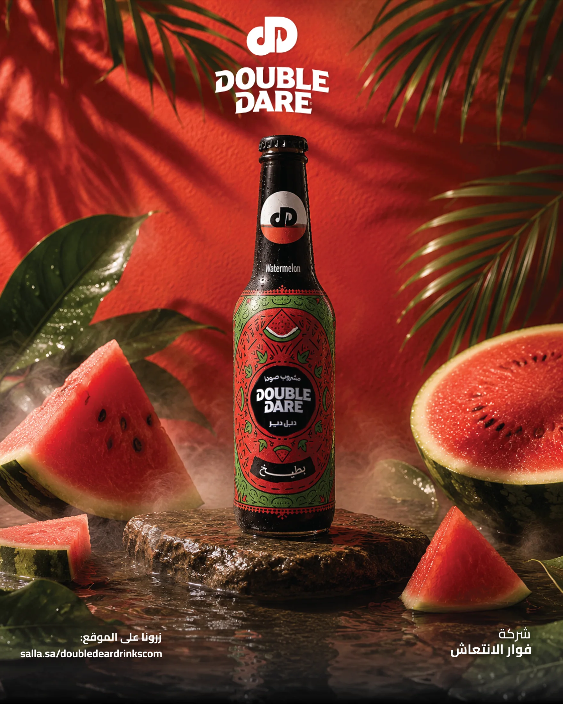

Campaign System
Double Dare
Flavor-led product worlds designed as a flexible summer campaign system for a beverage family.

Challenge
Keep multiple flavors visually distinct while maintaining a consistent, recognizable campaign language.
Approach
Each flavor receives its own environment and color story while the bottle remains the visual anchor across lifestyle and product-led compositions.
Campaign art directionFlavor systemProduct compositionsLifestyle visualsSeasonal social content